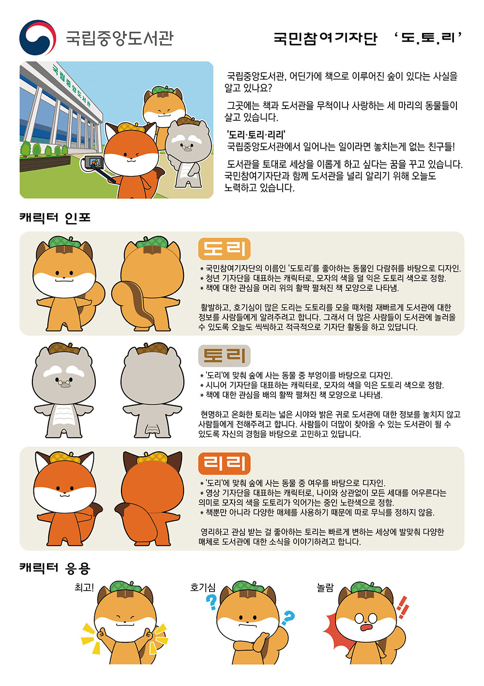
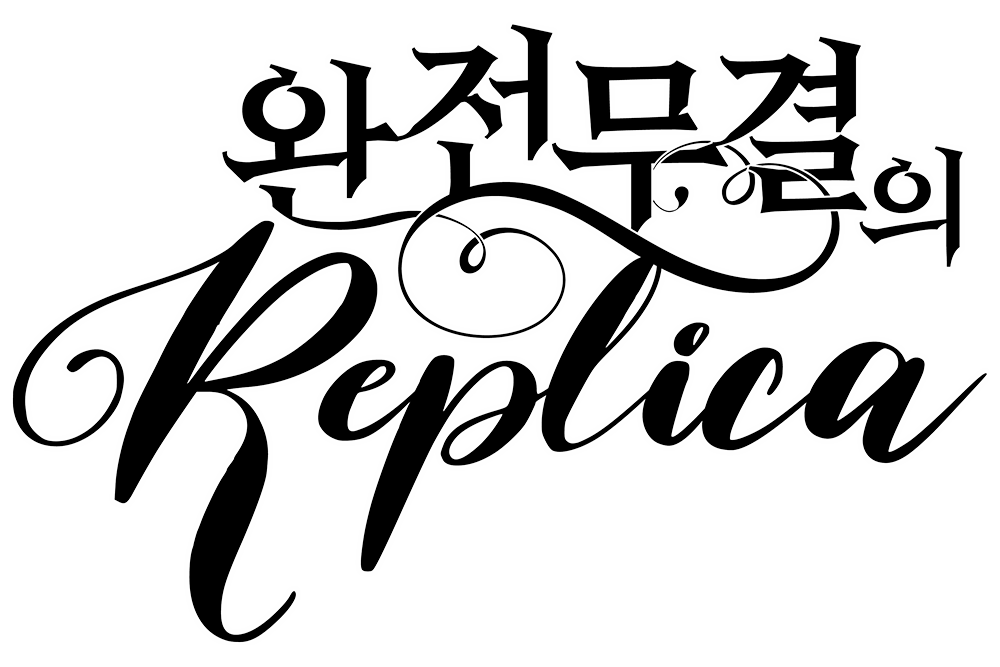
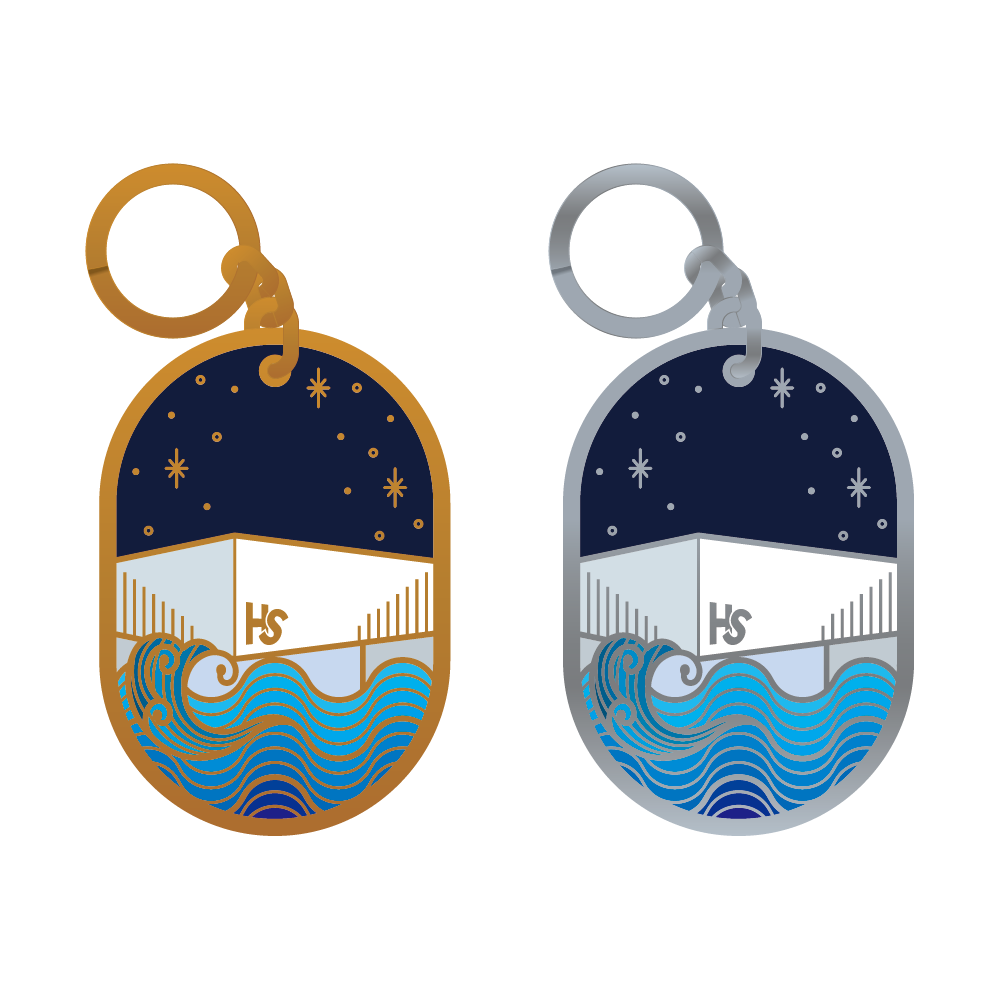

설 명 : 피아노 레슨 예약 사이트. 피아노의 건반을 모티브로 각진 레이아웃을 구성함.사이트가 너무 무거워보이지 않도록 주조색을 짙은 회색으로 정하고, 포인트가 되어야하는 부분에만 로고에 사용한 노랑으로 강조함.
사이트 디자인 2
사용툴 : VSC(HTML/CSS), Photoshop
기여도 : 100%
설 명 : 꽃집 사이트. 부드러운 느낌을 줄 수 있도록 파스텔톤의 녹색을 주조색으로 정함.섬세한 이미지를 강조할 수 있도록 세필로 그린 듯한 아이콘을 중앙에 배치함.
사이트 디자인 3
사용툴 : VSC(HTML/CSS), Photoshop
기여도 : 100%
설 명 : 동물병원 사이트. 신뢰감을 줄 수 있는 파랑, 녹색을 테마컬러로 사용 자주 이용하는 메뉴를 슬라이드 아래에 따로 배치해 편의성을 높임. 배너 및 유튜브 썸네일을 제작해 전달하고자 하는 정보를 시각적으로 강조.
사이트 디자인 4
사용툴 : VSC(HTML/CSS), Photoshop
기여도 : 100%
설 명 : 베이커리 사이트. 색상이 다양한 디저트 사진의 특성 상 색상을 다양하게 사용하면 자칫 어지러워보이기 쉬워 검정을 주조색으로 사용. 세련된 느낌을 줄 수 있도록 얇은 폰트와 각진 테두리를 주로 하되, 케이크가 주는 부드러운 느낌을 전달할 수 있도록 배너에는 둥근 모서리를 사용.
사천읍성축제 캐릭터 공모전 참여작
사용툴 : Illustrator, Photoshop
기여도 : 60% (팀작업 / 캐릭터 디자인, 서브캐릭터 일러스트, 상세페이지 및 목업)
설 명 : 아이디어를 바탕으로 캐릭터 구체화, 일러스트 작업 및 상세페이지 편집을 담당.

국립중앙도서관 국민참여기자단 '도.토.리' 캐릭터 공모전 참여작
사용툴 : Illustrator, Photoshop
기여도 : 70% (팀작업 / 아이디어 구상, 캐릭터 일러스트, 상세페이지)
설 명 : 아이디어를 바탕으로 캐릭터 구체화, 일러스트 작업 및 상세페이지 편집을 담당.
매쓰마스터 일프로연산 캐릭터 공모전 참여작
사용툴 : Illustrator, Photoshop
기여도 : 70% (팀작업 / 아이디어 구상, 캐릭터 일러스트, 상세페이지)
설 명 : 아이디어를 바탕으로 캐릭터 구체화, 일러스트 작업 및 상세페이지 편집을 담당.
친구 커플 캐릭터
사용툴 : Illustrator, Photoshop
기여도 : 100%
설 명 : 친구 커플의 1주년 기념 캐리커쳐. 각각 인물의 얼굴에서 특징이 될만한 부분(곱슬머리, 안경, 눈매, 입모양)을 파악해 장점을 살리는 방향으로 구상함.
사남 난타단 '타오름' 로고 1
사용툴 : Illustrator, Photoshop
기여도 : 100%
설 명 : 타오름이라는 이름에 맞게 직관적으로 불의 이미지를 형상화. 난타의 소리를 형상화한 번개무늬와 파편으로 역동감을 줌.
사남 난타단 '타오름' 로고 2
사용툴 : Illustrator, Photoshop
기여도 : 100%
설 명 : 난타 하는 모습을 일러스트로 넣고, 글자에 깨진 효과를 줘 시각적으로 집중시킴. 일러스트와 대비될 수 있도록 이름 부분에 남색을 사용.
타이포 로고 1
사용툴 : Photoshop
기여도 : 100%
설 명 : 고양이가 있는 카페라는 내용에 맞게, 글자를 고양이, 샌드위치 모양으로 변형함. 'ㅍ'을 파르페잔으로 연상해 아이 스크림과 빨대를 장식함. '돌려줘'라는 문구에 맞춰 와글와글한 느낌을 주는 강조선을 사용.
타이포 로고 2
사용툴 : Illustrator, Photoshop
기여도 : 100%
설 명 :
전기양, 안드로이드가 주는 SF적인 느낌을 살리기 위해 네온 효과, 반사광 효과를 메인 문구에 적용. 기계와 인간의 사랑에 대한 내용을 다루고 있어 하트를 주요 소재로 사용.
타이포 로고 3
사용툴 : Photoshop
기여도 : 100%
설 명 : 칭찬과 방이 메인 테마. 이를 강조하기 위해 굵은 폰트를 사용하고, 도드라질 수 있게 반사광, 배경을 넣음. 중간 여백에 칭찬이라는 키워드가 시각적으로 드러나도록 말풍선과 엄지 이모지를 사용.
타이포 로고 4
사용툴 : Illustrator
기여도 : 100%
설 명 : 탐정부라는 소재에 맞게 사건수첩, 돋보기라는 소재를 배치하고, 'o', 'ㅁ', 'ㅂ' 부분을 쪼개어 스텐실 효과를 냄.

타이포 로고 5
사용툴 : Illustrator
기여도 : 100%
설 명 : 웹소설 제목 느낌이 나도록 둥근 장식선과 필기체를 이용하여 꾸밈.
2019 경북교육청연구원 인성인문학 한마당 시안
사용툴 : Illustrator, Photoshop
기여도 : 100%
설 명 : 실포스터 의뢰 전 시안으로 제작. 관람객들을 초대하는 초대장을 작성하는 테마로 구성함. 축제의 느낌을 줄 수 있도록 배경에 파티클과 강조선을 은은하게 사용.
2019 1차 경북교육포럼 포스터
사용툴 : Illustrator(무료소스 사용)
기여도 : 100%
설 명 : 마을, 학교라는 키워드에 맞춰 동네 모습을 표현할 수 있는 소재를 사용해 배치. 지역특성에 맞춰 친근감을 줄 수 있는 주황색을 배경색으로 선택했으며, 색연필로 낙서한 듯한 효과를 더해 아이들의 꿈이라는 주제를 표현.
2019 2차 경북교육포럼 포스터
사용툴 : Illustrator
기여도 : 100%
설 명 : 타이포를 중심으로 포스터를 구성. 이야기라는 주제에 맞게 말풍선 속에 주제를 넣고, '작은 학교'라는 키워드가 강조되지만 어색하지 않도록 같은 톤의 자주색을 사용함.
시나리오 포스터 1
사용툴 : Illustrator, Photoshop
기여도 : 100%
설 명 : 홍콩 느와르 풍의 시나리오. 창문 느낌을 내기 위해 동양풍 테두리, 물이라는 이미지를 강조하는 물결무늬 소스를 배치.'수면 아래의 것'이라는 키워드에 맞추어 물결과 뱀 이미지를 합성함. 영화 포스터 느낌을 강조하기 위해 배경 에 하프톤 효과를 줌.
시나리오 포스터 2
사용툴 : Illustrator, Photoshop
기여도 : 100%
설 명 : 겨울, 까마귀, 저택 키워드의 시나리오. 각 키워드에 해당하는 이미지를 각각 포토샵 효과로 합성한 뒤, 자연스럽게 어우러지도록 겹치는 부분을 지워줌. 타이포에 그런지 효과를 줘 눈이 내리는 것처럼 보이도록 함.
시나리오 포스터 3
사용툴 : Photoshop
기여도 : 100%
설 명 : 청춘, 학교, 엉뚱한 키워드의 시나리오. 벛꽃 일러스트 소재, 여학생의 실루엣, 분홍색 배경을 조합해 순정만화 풍의 포스터를 제작. 배경은 사진에 포토샵 효과를 줘 일러스트 느낌이 나도록 만듬. 타이포도 중심 소재인 식빵과 학생이 연상되도록 노란색과 분홍색의 조합으로 색상을 선정.
시나리오 포스터 4
사용툴 : Illustrator, Photoshop
기여도 : 100%
설 명 : 거울, 희생 키워드의 시나리오. 배경 이미지 속의 거울에 조각상 소스를 합성. 만들어둔 로고에 포토샵 효과를 이용해 물방울 효과를 줌.
공모전 캐릭터 목업 디자인
사용툴 : Illustrator, Photoshop
기여도 : 50% (팀작업 / 목업)
설 명 : 팀원이 제작한 응용동작 캐릭터 소스를 이용해 다양한 목업 제작. 축제 운영 시 사용할 수 있는 배너 이미지를 만듬. 기념품으로 사용하기 좋은 상품으로 구성.
CD 커버 디자인
사용툴 : Photoshop
기여도 : 100%
설 명 : 장미, 까마귀, 책 키워드의 CD 커버 및 목업 디자인. 책이 넘어가는 소리와 비장함이 감도는 오케스트라 음악의 CD커버 제작. 비장함을 표현하기 위해 조각상 소스와, 전체적인 채도를 낮게 함. 포인트인 붉은 장미와 까마귀를 책 위에 배치함으로 장미와 까마귀의 이야기를 표현함.
티셔츠 디자인
사용툴 : Photoshop
기여도 : 100%
설 명 : 친구의 고양이 티셔츠 제작. 자는 걸 좋아하는 고양이의 특징을 살리기 위해 침대와 이불, 수면 모자를 소스로 사용함. 고양이가 좋아하는 간식, 장난감을 사이사이 배치함. 동그란 폰트를 사용해 문구의 익살맞음을 더함.
팜플렛 디자인
사용툴 : Illustrator, Photoshop
기여도 : 100%
설 명 : 심해 탐사 재단 테마의 팜플릿 목업. 심해 탐사라는 주제에 맞게 푸른색을 위주로 구성. 키워드를 강조하기 위해 문어, 해파리, 해마 일러스트를 사용함. 심해로 내려가는 이미지를 주기위해 중앙을 가로지르는 푸른 띠를 사선으로 배치.

키링 디자인
사용툴 : Illustrator
기여도 : 100%
설 명 : 팜플렛과 같은 테마의 키링 디자인. 건물을 메인으로 물결을 단순화해 바다를 표현함. 배경으로 짙은 네이비를 사용해 밤하늘과 심해의 느낌을 동시에 줌.
유튜브 썸네일 1
사용툴 : Photoshop
기여도 : 100%
설 명 : 동물병원 테마의 유튜브 썸네일. 동물병원의 테마색으로 쓴 연녹색과 파랑을 중심으로 타이포의 색을 정하고, 강조요소로 빨강을 더함. 배경으로 사용할 강아지 사진 두개를 자연스럽게 보이도록 경계를 흐릿하게 함.
배너 1
사용툴 : Photoshop
기여도 : 100%
설 명 : 동물병원 테마의 배너. 동물병원의 테마색으로 쓴 연녹색과 파랑을 중심으로 타이포의 색을 정함. 강아지의 산책을 강조하기 위해 배경을 지우고 그림자를 넣어 앞으로 뛰어오는 느낌을 더함.
배너 2
사용툴 : Illustrator, Photoshop
기여도 : 100%
설 명 : 로맨스 판타지 테마의 배너. 타이포는 일러스트레이터로 제작. 로맨스판타지라는 타이포를 강조하기 위해 영문으로 작성 후 장식요소를 더함. 주제에 적절히 어울리도록 성, 꽃밭 등의 요소를 배치하고 책 속에 들어간다는 내용에 어울리도록 찢어진 종이 안에 타이포를 배치함.

.jpg)
.jpg)
.jpg)
.jpg)

.jpg)